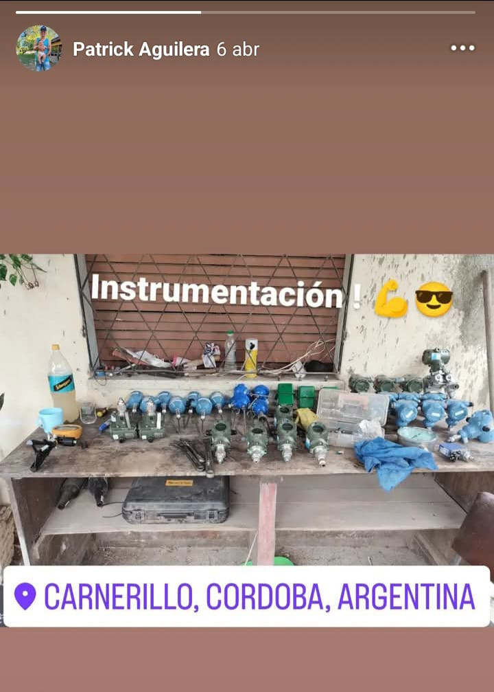
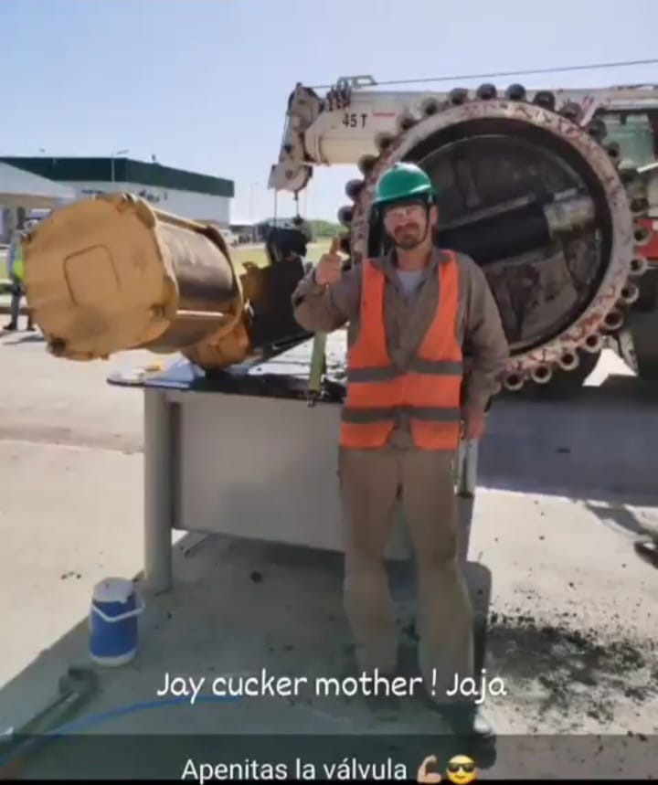
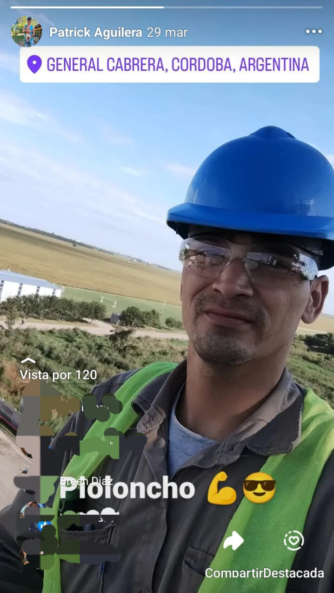
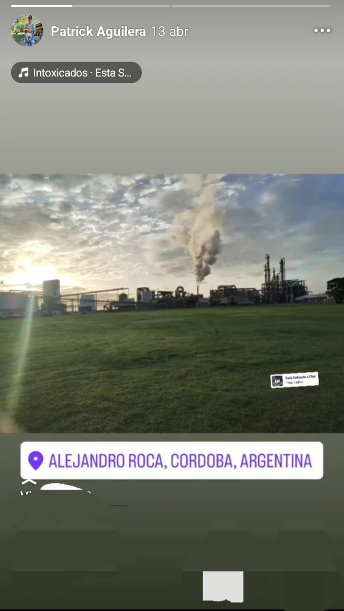
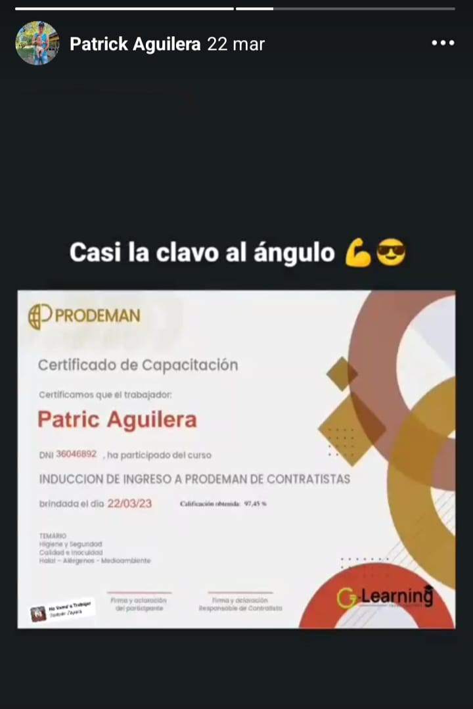

Mantenimiento e Instrumentación Industrial
Signal Instrumentation Industrial (AGD / ProMaiz)Responsable del mantenimiento de instrumentos de precisión y mecánica pesada en plantas de producción continua. Calibración y diagnóstico.
Técnico Operativo Especialista en Mantenimiento Industrial, Soldadura Avanzada (UPRO) y Instrumentación Industrial. Perfil híbrido enfocado en la optimización de procesos operativos.
Responsable del mantenimiento de instrumentos de precisión y mecánica pesada en plantas de producción continua. Calibración y diagnóstico.
Dominio experto de procesos de soldadura industrial y lectura de planos técnicos para fabricación.
Experiencia práctica en el mantenimiento preventivo, correctivo y puesta a punto de sistemas de válvulas industriales críticas.
Fotos reales de Patric Aguilera trabajando en entornos industriales y de formación.





Selectoras: Hagan clic para descargar y verificar la documentación original.
Ecosistema digital especializado en la automatización de procesos. Incluye el motor de gestión docente EduPro Elite.
Nombre completo: Patric Augusto Aguilera
Edad: 34 Años
Direccion:Guemes 468
Nacionalidad: Argentino
Estado Civil: Soltero
Estudios Primarios: COMPLETO
Estudios Secundarios: COMPLETO
Habilidades:
Idiomas:
OBJETIVOS :
RESUMEN :